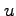
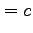
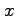
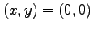

Maple has many algebraic and numerical tools for finding the solutions to systems of (not necessarily polynomial) equations. Perhaps the simplest black-box solver is provided by the appropriately named function solve. As a first example, we will solve the following system of linear equations in and  and free parameters and .
|  | ||
To input and solve this system in Maple, we execute the following line of code.
solve({3*x+y+z-u-a, 13*x+8*y+6*z-7*u-b, 14*x+10*y+6*z-7*u-c,
7*x+4*y+3*z-3*u-d},{x,y,z,u});
In general, the first input parameter to solve is a list of expressions presented in the form followed by a list of variables to ``solve" for. In this case (and generally), the output from the calculation is given as (sequences of) lists such as
For those interested in a matrix approach to solving these equations, the following code is appropriate.
M := [[3,1,1,-1],[13,8,6,-7],[14,10,6,-7],[7,4,3,-3]]: v := matrix(4,1,[a,b,c,d]): evalm(inverse(M)&*v); # &* is used to multiply two matrices
It is constructive to play around with the function solve to see what it does on various types of inputs. For instance, how does it handle equations with an infinite number of solutions or for which there are no solutions?
# degenerate linear equation
solve({t*x + t^2*y - t, x + t*y - 1},{x,y});
# {x = -t y + 1, y = y}
# linear equation with no solution
solve({t*x + t^2*y - 0, x + t*y - 1},{x,y});
For the first example, Maple returns a solution indicating that is a free parameter and that  depends on this parameter in the manner indicated. In the second example, solve outputs nothing, indicating that there is no solution to the system of equations. In general, however, one must be skeptical of the output from the function solve. It does its best with the tools it has, but there is no guarantee that it is giving you all correct solutions. In the simple example below, Maple (incorrectly) does not exclude the case  in its list of solutions.
solve({y/x},{x,y});
# {x = x, y = 0}
A companion to the function solve is a numerical solver fsolve which is called in the same way as solve. An important difference, however, is that the number of equations must match the number of variables or else an error message will result.
fsolve(x^3-3*x+1,x); # -1.879385242, .3472963553, 1.532088886 evalf(fsolve(x^3-3*x+1,x),20); # -1.8793852415718167681, 0.34729635533386069770, 1.5320888862379560704
Above, we used another function evalf to extend the accuracy of our solution to digits. This function is also important when one has a symbolic solution to an equation that one wants to see approximately. For instance, we could have solved the above equation first symbolically and then approximated the formula numerically.
solve(x^3-3*x+1,x); evalf(%); # 1.532088886 - 0.1*10^(-9) I, -1.879385241 - 0.1732050808*10^(-9) I, ...
The careful reader will notice that the output from these two examples is different - there is a very small imaginary part (the complex number is denoted by in Maple) that is detected by the second command. Moreover, increasing the number of digits of accuracy does not remove the problem. So how do we resolve this issue? Fortunately, there is a built-in function called realroot which gives (provably correct) bounding boxes for the real roots of univariate polynomials.
e := 1: realroot(x^3-3*x+1, e); # [[0, 1], [1, 2], [-2, -1]]
The output here indicates that there are at least three real roots to the given equation and that they lie inside each of the indicated intervals. The variable is used to bound the size of the isolating intervals. Setting , for instance, will produce bounding intervals that are of length at most :
We close this section with the function eliminate, which is very useful for human-guided equation solving.
# intersecting hyperboloid and sphere
hyp := x^2+(y-3/2)^2-z^2-1/4;
sph := x^2+y^2+z^2-4;
eliminate( {hyp, sph}, x);
# [{x = RootOf(_Z^2+y^2+z^2-4)}, {-6+3*y+2*z^2}]
In this example, the variable is eliminated from the equations, resulting in the new equation listed in the output. Thus, we see that with a free variable, we have and is given by the funny expression . Although confusing, this is just Maple's way of symbolically representing roots of univariate polynomials. Translated into mathematics, the expression is simply saying that given and , the value for can be chosen to be a root of the equation . While this might seem cumbersome, it is unavoidable. For instance, how would one represent and manipulate the solution to an unsolvable quintic?
soln := solve(x^5-x+1,x); a := soln[1]; simplify(a^10);
There are other solving tools available such as the Gröbner basis libraries included in later versions of Maple. However, we refer to www.mapleprimes.com/blog/roman-pearce/improvements-to-maple-11-groebnerwhich has numerous examples displaying the power of Faugere's FGb program implemented in Maple 11.